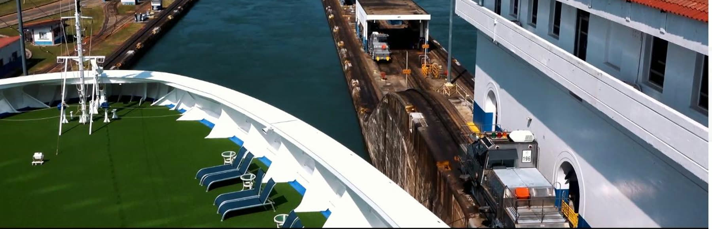
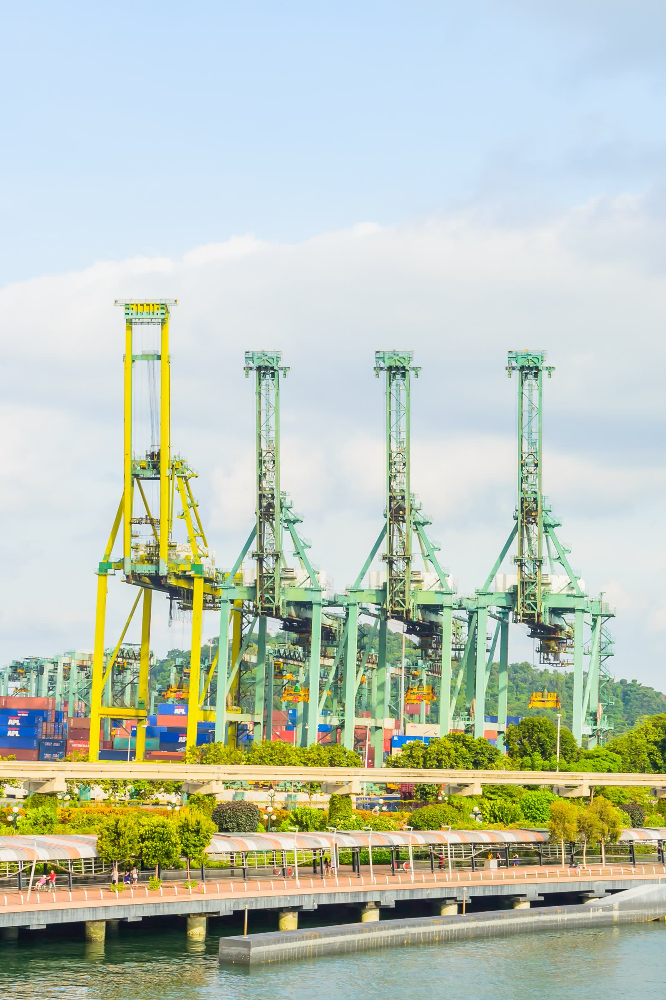

La dirección visual del nuevo sitio, en tokens y componentes reales, para aprobarla antes de construir. Todo lo que ves aquí es lo que se convierte en Tailwind v4 y componentes de Next.js en la semana 1.
Cómo se decidió el lenguaje visual y qué no vamos a hacer.
Lectura: rediseño total de un sitio B2B de servicios marítimos para gerentes de operaciones, claims handlers y traders. Compradores exigentes que juzgan la seriedad en 5 segundos. El lenguaje es "trust-first premium" con carácter náutico-editorial: mucho aire, fotografía real de operación, datos en monoespaciada, un solo acento que viene del ancla azul del logo.
Un tema por página: las páginas de contenido son claras. El hero de la home y el pie son el único bloque oscuro, como decisión de composición (no se alternan bloques claro/oscuro a lo largo de la página).
Craft: una escala de radios (12 px tarjetas, 8 px inputs, píldora para botones y chips), una paleta, una familia tipográfica, una familia de iconos, cero emojis, sombras teñidas con el fondo, ningún valor al azar.
No hacemos: héroes centrados sobre gradientes morados, tres tarjetas iguales en fila, etiqueta pequeña en mayúsculas sobre cada sección, guiones largos, marquesinas múltiples, capturas falsas hechas con divs, fotos de stock de apretones de manos, brillos neón, negro puro, blanco puro.
Movimiento (siempre motivado): aparición escalonada al entrar en viewport, pila pegajosa de 4 pasos para el proceso del port call, parallax sutil del agua en el hero (se apaga con reduced motion), elevación de 1 px en hover. Springs críticamente amortiguados, interrumpibles, feedback en pointerdown.
Accesibilidad: contraste AA en todo (AAA en cuerpo), foco visible de 3 px, objetivos táctiles de 44 px, reduced motion, reduced transparency (la barra translúcida pasa a sólida).
Neutros fríos y un solo acento. Los valores son los tokens de Tailwind (@theme).
Geist para todo lo editorial, Geist Mono para lo operativo (IMO, coordenadas, toneladas, fechas, números de solicitud). Tracking negativo al crecer, leading que se aprieta en display y se abre en cuerpo.
Base 4 px. Secciones a 56 a 96 px. Contenedor de 1240 px. Breakpoints 640 / 768 / 1024 / 1280.
Las sombras van teñidas con el fondo (grafito o cobalto), nunca negro puro. Por defecto las tarjetas se separan con borde y aire; la sombra aparece solo en hover o en el elemento destacado.
Con todos sus estados: normal, hover, activo, foco, deshabilitado, cargando, error y éxito.
Una etiqueta por intención en todo el sitio. Respuesta en pointerdown (escala 0.98), foco visible de 3 px, altura mínima 44 px.

Nomination to FDA, both sides of the Canal.
Learn more →MGO and ULSD in Panama, CIF or FOB, with quantity verified.
Learn more →
Independent surveys with reports your underwriter will accept.
Learn more →Imágenes de ejemplo tomadas del material actual del cliente (company profile y sitio). Se reemplazan por la sesión de fotos.
"They had the surveyor on board at Cristóbal four hours after our email. The report closed the dispute."
Operations Manager, ship management company, Athens (ejemplo de formato; los testimonios reales se piden con permiso)Asimétrico, oscuro, con la foto a sangre y un solo CTA primario. Copy A del copy deck. La barra translúcida se funde con la foto.
Licensed by the AMP and the Panama Canal Authority since 2010. One team for the transit, the survey and the claim. 24/7.
La foto de ejemplo es del company profile del cliente (lleva su marca antigua sobreimpresa). La definitiva sale de la sesión de fotos: tránsito visto desde cubierta, luz de mañana, sin texto.
Las 10 secciones en orden, con su familia de layout. Ninguna familia se repite.
Móvil: todo colapsa a una columna, el hero pone la foto arriba con degradado, la barra pasa a menú, WhatsApp queda como botón flotante discreto.
Solo lo que comunica algo. Este bloque entra escalonado al cargar (jerarquía). En el sitio real lo hace Motion con springs y useReducedMotion.
| Interacción | Spring (Motion) | Reduced motion |
|---|---|---|
| Aparición de sección | bounce 0 · duration 0.5 | solo opacidad 200 ms |
| Menú y hojas | bounce 0.15 · duration 0.35 (solo si hubo gesto) | cross-fade |
| Parallax del hero | 8 a 12 px con useScroll + useTransform | desactivado |
| Botones | scale 0.98 en pointerdown, vuelve con bounce 0 | igual (no vestibular) |